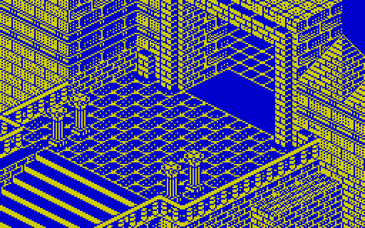
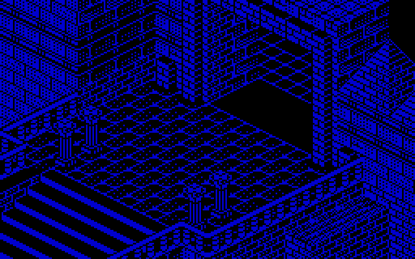
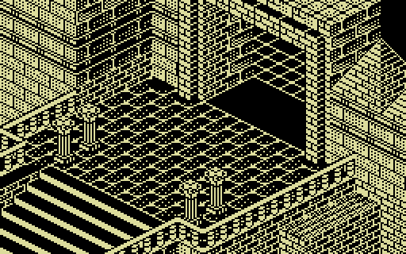
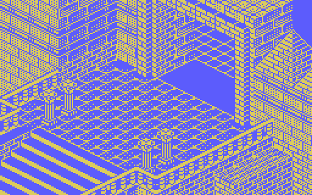
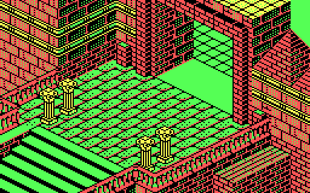
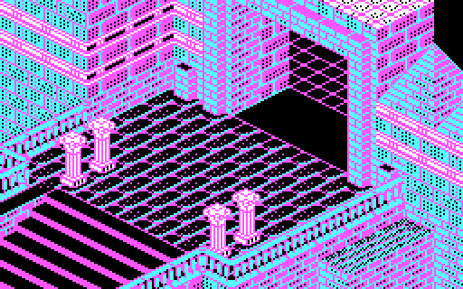

Before entering the abbey, Adso writes down what he witnessed in 1327. This is not a font being revealed: every letter forms pixel by pixel, just as it does in the game manuscript. The version selector changes its appearance and music too.
Amstrad CPC · 1987
Page 1
CPC · no music
The threshold of the game
Adso's testimony
The animation recreates the manuscript as the player saw it: a 320 × 200 screen, letters drawn stroke by stroke, deliberate pauses, and the original page turn. Let it unfold at its own pace or accelerate the reading.
Appearance by version: CPC and CGA reproduce their documented palettes; VGA also uses the remake's graphical background; ZX and MSX adapt the original manuscript to their characteristic colours.
Read the complete transcript
IV · The controls
Classic controls
First turn William, then walk. Adso and the objects follow rules of their own.
←→↑ Move William
Left and right turn; up walks forward. You can also use L, K, and A.
↓ Direct Adso
Turn William and hold down —or Z— to move Adso in that direction. Release it and he follows again.
Objects
Move the carrier close to collect automatically. Space drops William’s leftmost item if there is room ahead.
S / N Sleep
Answer Adso in your cell: S (Spanish sí) advances to prime; N keeps you awake.
Choose a portrait. Each dossier combines what players see with the genuine routines described by the reconstructed code. This chapter contains story spoilers.
CPC · original design
Friar William of Occam · Reason under surveillance
William
He is the only figure whose agenda depends on us, yet the abbey treats him as another moving piece. He can carry six objects, open doors according to his keys, read the scroll when wearing the spectacles, and die by leafing through the poisoned book without gloves.
“I fear one of the monks has committed a crime.”
RoutineInvestigate without missing prime, sext, vespers, or compline; leave the cell only when the Abbot sleeps.
The weekD1: receives the case. D2–3: scriptorium, scroll, first clues. D4: Bernard officially closes the investigation. D5–6: keys, lamp, spectacles, library. D7: the last chance.
SecretThe percentage combines elapsed time with recorded discoveries. A spoiler-protected explanation appears below.
CPC · original design
Adso of Melk · Companion, compass, bearer of light
Adso
His apparent clumsiness hides elaborate following logic. He searches routes to William, tries alternative directions, steps away when blocking him, and can be controlled directly to collect selected objects. The daily cycle also makes him leave his master for communal duties.
“Shall we sleep, master?”
RoutineChurch at prime and vespers, refectory at sext, cell at compline. At night he asks whether to sleep; if the answer is no, he resumes following William.
The weekWarns of dawn, a missing lamp, and dwindling oil. In the library he lights it; outside he extinguishes it. Trapped in darkness, he counts down to failure.
SecretIn the ending he sees what blind Jorge cannot: William’s gloves. The observation turns a certain execution into a pursuit.
CPC · original design
The Abbot · Stage manager and keeper of time
The Abbot
He sets the game’s pulse. He waits until the expected monks occupy their places before mass or meals, escorts William to his cell, closes the night door, and patrols against intrusions. Every order he gives starts or stops the dramatic clock.
“You must respect my orders and those of the abbey.”
RoutineLeads prime and vespers, presides over sext, escorts William at compline, and sleeps on a counter that may wake him. By day he wanders and receives reports.
The weekD1 assigns the case; D2 declares the library secret; D3 presents Jorge; D4 orders the inquiry stopped; D5 leads the way to Severinus’s cell; D6 announces expulsion; D7 enforces it at terce if the mystery remains.
PunishmentExpels William for entering his cell, visiting the library by day, trespassing in the western wing on day one or during prime, or repeatedly disobeying.
CPC · original design
Malachi · Keeper of the scriptorium
Malachi
He lives between his desk and the forbidden threshold. He guards a key, blocks the library stairs, and turns an overlong scriptorium visit into a report. In the evening he closes the western wing, waiting until Berengar—and later Bernard—have left.
“I am sorry, venerable brother: you may not enter the library.”
RoutineChurch at prime; work and surveillance in the scriptorium; church at vespers; cell at compline and night. On retiring, he closes doors and passes the kitchen’s hidden passage.
The weekD2 lets Berengar show the scriptorium. D5, during terce, goes to Severinus’s cell and kills him, then returns to his desk. At vespers he reaches church and succumbs to the poison.
SecretHis death is not decoration: the Abbot waits for his arrival at mass, detects the dying state, announces it, and lets time advance.
CPC · original design
Berengar · A witness who also watches
Berengar
He works in the scriptorium and serves as guide on day two, praising the copyists and pointing out Venantius’s desk. But he protects the scroll. If William takes it, he demands its return; if William persists or leaves the room, Berengar finds the Abbot.
“Leave Venantius’s manuscript, or I shall warn the Abbot.”
RoutinePrime and vespers in church, sext in the refectory, work in the scriptorium, compline in the shared cell.
The weekD1–2 guards the manuscript. Night of D3: dons a hood, leaves the cell, fetches the book, and carries it to Severinus’s cell. He dies there, leaving the vital clue on tongue and fingers.
SecretAt vespers on D2 he may stand guarding the scroll until Malachi descends: two autonomous routines synchronise without the player.
CPC · original design
Severinus · Herbalist and voice of doubt
Severinus
From day two onward he introduces himself and states the game’s political idea: somebody decides what monks may know. He examines Berengar’s body and spots black stains that connect the deaths with the book.
“Someone does not want the monks to decide for themselves what they should know.”
RoutinePrime in church, sext in the refectory, compline and night in his cell. Between terce and none, alternates between his cell and an adjacent room and seeks William to talk.
The weekD2 introduces himself. D4 at terce, finds William and asks him to wait before explaining the stains. D5 discovers a strange book in his cell and tries to warn William; at terce, Malachi goes to his cell and murders him.
SecretHis route depends on whether he has introduced himself, William’s position, and whether another line is playing. The encounter feels accidental because the machine negotiates it.
CPC · original design
Jorge of Burgos · The still centre of the maze
Jorge
For much of the game he is not even active. He appears in one carefully staged conversation, then disappears until the finale. The game keeps him still and off-screen, yet every trail eventually leads back to him.
“The paths of the Antichrist are slow and tortuous.”
RoutineD3: stands still during prime; at terce the Abbot presents William and Jorge warns of the last days; at sext he returns to the communal cell and deactivates.
The weekD3 hides the book. D6–7 waits behind the mirror, offers the Coena Cypriani, and trusts its poison. Discovering the gloves, he flees through the maze with the volume.
SecretThe code moves the camera to follow him, blacks out the play area, removes the book from the inventory, and turns a revelation into a chase.
CPC · original design
Bernard Gui · Investigation as pursuit
Bernard
He appears on the stairs on day four with one clear priority: recover the manuscript, not identify the murderer. If William carries it, Bernard follows him, demands it, and reduces Obsequium until taking it, then delivers it to the Abbot.
“Give me the manuscript, Friar William.”
RoutineAttends prime, sext, and vespers; sleeps in the communal cell. Once his task is complete, wanders among random destinations.
The weekD4 enters, locates the scroll or pursues William, hands it to the Abbot, and makes him store it in his cell. D5 leaves by the entrance stairs.
SecretHis arrival changes Malachi too: the librarian waits for Bernard to leave the west wing before shutting the doors.
VI · The rule
The bells command
Here the day is measured in prime, terce, sext, none, vespers, and compline. Select a phase and watch one bell redistribute the entire community.
Abbey clock7 phases of the day
Reconstruction · CPC status panelNowPrimeMass at dawn. The Abbot waits for the monks expected that day and speaks a different line according to deaths and absences.
The timetable is the level
Time does not expire in a countdown; it dictates conduct. The player must interrupt the investigation, find the church or refectory, and stand in the exact place. During each ceremony, the program checks who remains alive and decides which phase may begin.
The Abbot’s order:attend the offices and meals; remain in the cell at night; do not enter the library; do not explore without permission.
Real capture · Follows the selector aboveObsequium on screen
Internally, the value runs from 0 to 31. Each reprimand lowers it; when it reaches zero, William is expelled. The display shows exactly how far he has tested the Abbot’s patience.
VII · The labyrinth
The abbey under suspicion
Isometric perspective hides doors behind walls, reverses instinct, and demands a memory for height. Losing one’s way is part of the investigation, not a detour from it.
Main floorThe complete lower level, separated and zoomable.ScriptoriumVenantius's desk and the stairs leading to the library.LibraryThe upper labyrinth as an independent plan.
Micromanía cartographyThe complete two-page spread, published two pages after the guide begins.
Interactive map
The complete abbey, room by room
Each screen appears in its place within the abbey. PC, Spectrum, and MSX use their own data; CPC and VGA share the recovered architecture, with artwork from each version. The “Version” selector lets you compare the screens from all five versions; the “Light” control switches between day and night. The upper complex brings together both storeys of the aedificium: scriptorium and library.
Select any room to see it at full size. Move to adjacent rooms with the arrow keys, the on-screen buttons, or a swipe on mobile. If you zoom in, drag the image to explore it. Close by clicking outside the image, choosing “Close”, or pressing Esc.
Route guide
The abbey, traversed screen by screen
Manuel Pazos charted these maps and routes for Viento Sur. The seven pages preserved here belong to the later Guide to completing the adventure, based on that work. Beside the interactive atlas, this preserves something distinct: the annotated route as the player must learn it.
Learning the routeThe arrival route, reassembled screen by screen.
Screen atlas
Stone by stone, machine by machine
The same room reconstructed in the native daytime and night-time palettes of four original versions.
CPC · dayCPC · night

Spectrum · day

Spectrum · night

MSX · day

MSX · night

DOS CGA · day

DOS CGA · night
VIII · Evidence locker
Eight objects, no accidents
The inventory is tiny and choreographed. Objects change hands, appear only on selected days, or open routes the game never explains.
Original Amstrad CPC patterns, shown in a real three-slot tray from the status panel.
01 · Investigation
Book
A book connected to the investigation.
02 · Protection
Gloves
Protect William’s hands.
03 · Reading
Spectacles
They allow William to read the scroll.
04 · Manuscript
Scroll
A document that may provide clues to the investigation.
05 · Access
Key I
One of the two keys William can carry.
06 · Access
Key II
William’s other key. Each opens a different door.
07 · Access
Key III
The key Adso can carry.
08 · Light
Lamp
Adso carries it to illuminate dark places.
Open object locations, availability and uses · contains spoilers
William’s six item types and Adso’s two. Night begins the numbered day: night V follows compline IV. Locations change when a character picks up or drops an item.
The classic game’s eight objects
Object
Carrier
Location
Availability
Purpose
Removal or disappearance
Book
William
Initially in the scriptorium; later passes through Severinus’s cell and Jorge’s hands.
Jorge offers it behind the mirror from night VI; Micromanía reserves the final visit for night VII, with the gloves.
Evidence of the crime; carrying it without gloves is fatal even before the finale.
Berengar removes it from the scriptorium on night III. Jorge hides it at prime III and takes it away during his final escape.
Gloves
William
Severinus’s cell.
Already inside the cell when play begins; key II opens it from night VI. Micromanía recommends collecting them at terce VI.
Handle the poisoned book without dying.
No scheduled removal. If dropped, they must be collected again.
Spectacles
William
Starting inventory; later, the library’s illuminated room.
Lost at prime II; reappear on night V.
Read the scroll and learn the mirror clue.
Removal at prime II is compulsory.
Scroll
William
Scriptorium; may move to the Abbot’s cell or behind the mirror.
Available from the start, before the monks’ routines move it.
Bringing it together with the spectacles sets and reveals the correct mirror stair; read it before operating Q and R.
Moves behind the mirror at prime III unless William carries it. Berengar, Bernard and the Abbot can take it; the Abbot stores it in his cell.
Key I
William
Church altar.
Night V: collect it before prime.
Open the Abbot’s cell.
Disappears at prime V unless William carries it.
Key II
William
Malachi’s desk in the scriptorium.
Appears at the start of night VI.
Open Severinus’s cell to reach the gloves.
No scheduled removal after it appears.
Key III
Adso
Malachi’s desk in the scriptorium.
From the start, while on the desk: Malachi collects it at vespers and returns it when he resumes his post.
Open the secret passage door.
May temporarily be carried by Malachi. Once Adso collects it, there is no scheduled removal.
Lamp
Adso
Kitchen.
From prime III; returns to the kitchen at prime if used.
Light the library’s dark rooms; oil is consumed only there.
If used, it is removed from Adso and replaced in the kitchen at prime. Running out of oil extinguishes it; it need not be empty to be replaced.
First the spoiler-light version; then, if you choose, the full machinery. The cards scroll horizontally on small screens.
Hidden details are blurred.
Day I
Arrival
The Abbot guides us in, explains the crime, and lays down the rules. The west wing is forbidden.
Architecture and routine are learned while the case still appears manageable.
Day II
The scriptorium
Severinus introduces himself. Malachi lets Berengar show the workplace.
Venantius’s scroll can be taken; Berengar threatens to report William, while Malachi guards the library.
Day III
The elder
The Abbot presents Jorge, who speaks of Antichrist and the final days.
On the night that begins this day, hooded Berengar steals the book, takes it to Severinus’s cell, and dies. Jorge hides it at dawn, before the introduction.
Day IV
The Inquisition
Bernard arrives. The Abbot orders the investigation stopped.
Bernard pursues the scroll and gives it to the Abbot. Severinus reveals Berengar’s blackened tongue and fingers.
Day V
A thousand scorpions
Bernard leaves. Severinus finds a strange book in his cell.
Malachi kills Severinus at terce. During vespers, Malachi dies in church from the same poison.
Day VI
The library
The Abbot says we will leave tomorrow. The pieces of the mirror puzzle can now fit together.
Micromanía uses night VI to collect key II and the spectacles and practise the labyrinth, with Adso carrying key III and the lamp. At terce VI it collects the gloves from Severinus’s cell; at none it recovers the scroll from the Abbot with key I. The used lamp must be collected again after prime.
Day VII
The book
Expulsion is imminent. Terce is the final limit.
With the mirror clue read, the gloves, and Adso carrying key III and the lamp, reach Jorge. He offers the poisoned book and flees on discovering the gloves; follow him to the illuminated room to complete the investigation.
X · The score
How the percentage works
When the investigation remains incomplete, the game sums up your progress as a percentage.
If the game ends without solving the case, the percentage combines elapsed time with recorded discoveries. Obsequium is not added to the score.
Percentage = 7 × (day − 1) + hour + 4 × bonuses
Hour values: night 0 · prime 1 · terce 2 · sext 3 · none 4 · vespers 5 · compline 6. A total below 5 is displayed as 0%.
Each of these fourteen bonuses adds 4 percentage points once. [source] It remains recorded after losing the item or leaving the room; one visit can activate several bonuses.
Example. At prime on day VI, with eight distinct bonuses: 7 × 5 + 1 + 4 × 8 = 68%. One new discovery raises it to 72%; repeating an existing one adds nothing.
Completing the investigation displays the ending manuscript instead of this percentage.
Open the fourteen investigation bonuses · contains spoilers
William collects the gloves.
William collects key I.
William collects key II.
Adso collects key III.
William visits the abbey’s left wing at night.
William carries the scroll during night III.
William holds the scroll and spectacles together, making it readable.
William enters the Abbot’s cell carrying the scroll.
William enters the library.
William is in the library while Adso has the lamp.
William is in the library with the spectacles.
Reach the mirror room.
Operate the mirror mechanism: this bonus is recorded even if the wrong step is chosen.
Enter Jorge’s room behind the mirror during the final sequence.
When the investigation is complete, the game returns to the parchment so Adso can close his account. Its text reveals the entire ending.
Warning · full game-ending spoilersReveal the ending manuscript
Amstrad CPC · 1987
Page 1
CPC · no music
The original ending
What Adso left in writing
The complete ending manuscript, reproduced with the same strokes, pauses, and page turn as the opening.
The version selector now governs the music too. The original PC CGA game repeats its opening theme at the ending; CPC, VGA, ZX Spectrum, and MSX retain their own ending tracks. Music is optional and stops if you play it from the other manuscript.


 01 · Investigation
01 · Investigation 02 · Protection
02 · Protection 03 · Reading
03 · Reading 04 · Manuscript
04 · Manuscript 05 · Access
05 · Access 08 · Light
08 · Light{kind=link}